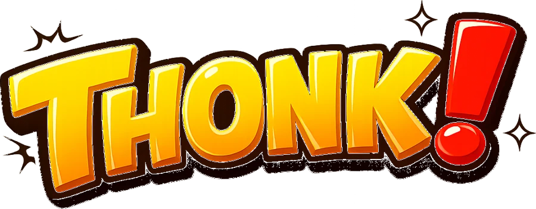

FAQ
Questions people ask. If yours isn't here, contact us through lmtechstudio.com.
Is THONK! free?
Yes. The game is free to play, with ads and optional purchases. Every hammer and item in the story can be earned by playing. You never have to pay to progress.
When is it coming out?
Soon, on Google Play for Android and on the App Store for iPhone. This page will have the download links on launch day.
Is there an iPhone version?
Yes, it's coming to the App Store too.
Will there be more worlds?
Yes. Six worlds is just the start: new worlds, monsters and bosses are planned in future updates.
Do I need an internet connection?
You can play without internet. Ads, purchases and the world leaderboard need a connection.
Why did I fail a level when I still had hearts?
To pass a level you need to bonk at least 75% of its monsters. If too many escape, the level is failed even with hearts left. The end screen shows how many you got.
How do I remove the ads?
Buy "No Ads" in the shop. It removes the ads between levels. Reward videos stay available, because those are always your choice (double coins, a revive...).
I bought something. How do I get it back on a new phone?
Open the options and tap "Restore purchases", with the same Google account you used to buy.
Where is my progress saved?
On your phone. Uninstalling the game deletes it, so don't uninstall it if you want to keep your progress.
How does the Endless leaderboard work?
Endless unlocks after World 2. Everyone plays with the same Diamond hammer and three hearts, so the ranking is fair: no purchase changes your score. Sign in to Google Play Games to appear on the world leaderboard.
The game drains my battery or feels slow.
In the options, set Effects to LIGHT. The game also switches by itself if your phone struggles.